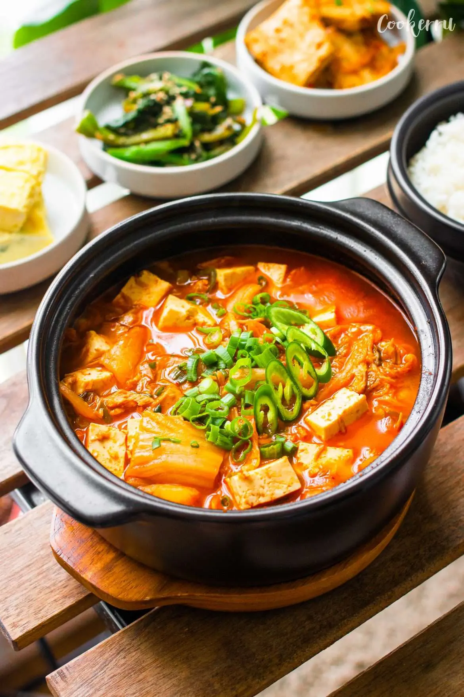

Kimchi Stew Recipe

Kimchi-jjigae (김치찌개) or kimchi stew is a jjigae, or stew-like Korean dish, made with kimchi and other ingredients, such as pork or, scallions, onions, and diced tofu. It is one of the most common stews in Korean cuisine.
- 1 tbsp sesame oil
- 1/2 yellow onion sliced
- 2 cloves garlic minced
- 1 cup aged kimchi cut into bite-sized pieces, see ingredient notes below
- 1 tsp sugar
- 2 1/2 cups water anchovy stock, dashi, low-sodium chicken stock or rice water (see notes below)
- 1/4 cup kimchi juice from the kimchi
- 1-2 tbsp Gochugaru (Korean red chili flakes) to taste
- 1 tbsp Doenjang (Korean soybean paste) or soy sauce
- 1 can tuna drained, can be skipped or subbed with pork or spam
- 1/2 container tofu soft or medium, cut into small cubes
- 1 tsp Dashida (Korean soup stock) optional, to enhance flavor
- 1 green onion, chili pepper optional, for garnish
- Add sesame oil to a pot over medium heat. Add onion, garlic, kimchi, and sugar, and cook for about 3-4 minutes, stirring often to ensure even cooking. Add rice water and bring to a boil.
- When the stew starts boiling, add kimchi juice, Gochugaru, and Doenjang (or soy sauce). Cook for about 8 minutes, or to your desired consistency.
- Add tuna and tofu and cook for another 2 minutes, and season with salt to taste, and add in Dashida if using. Garnish to your preference and enjoy!